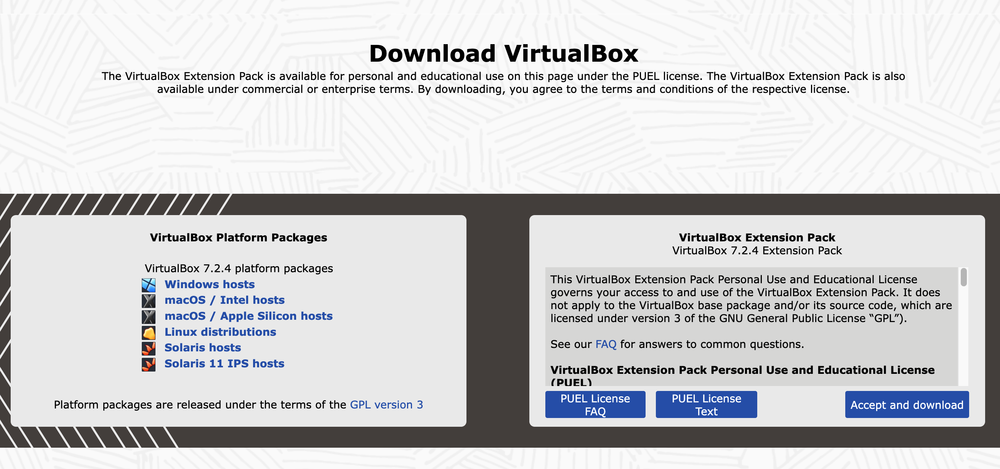

Ubuntu Server - Windows
Instalacja Ubuntu Server na Windows
Ten przewodnik przeprowadzi Cię przez proces instalacji Ubuntu Server 24.04 na Windows przy użyciu VirtualBox - darmowego oprogramowania do wirtualizacji.
Pobieranie Ubuntu Server
Pobierz najnowszą wersję Ubuntu Server:
Ubuntu 24.04 Live Server AMD64 ISO
Rozmiar: ~2.9 GB | Format: ISO
Wymagania systemowe
Minimalne wymagania:
- System operacyjny: Windows 10/11 (64-bit)
- Procesor: Intel/AMD 64-bit z obsługą wirtualizacji (VT-x/AMD-V)
- RAM: Minimum 4 GB (zalecane 8 GB)
- Miejsce na dysku: Minimum 25 GB wolnego miejsca
- Połączenie internetowe: Do pobierania aktualizacji
Potrzebne oprogramowanie:
- VirtualBox: Darmowa aplikacja do wirtualizacji
- Kodery wideo: Opcjonalnie dla lepszej wydajności
Instalacja VirtualBox
Krok 1: Pobierz VirtualBox
VirtualBox to darmowe oprogramowanie Oracle do uruchamiania maszyn wirtualnych:
- Przejdź na oficjalną stronę VirtualBox
- Pobierz wersję dla Windows
- Uruchom instalator
VirtualBox Windows
Rozmiar: ~120 MB | Format: EXE

Krok 2: Instalacja VirtualBox
-
Uruchom pobrany plik
VirtualBox-x.x.x-xxx.exe - Kliknij "Next" i postępuj zgodnie z instrukcjami
- Zaakceptuj domyślne ustawienia
- Włącz opcję "Install VirtualBox"
- Podczas instalacji może pojawić się ostrzeżenie o sterownikach - kliknij "Install"
- Po zakończeniu kliknij "Finish"
Tworzenie maszyny wirtualnej
Krok 3: Utwórz nową maszynę wirtualną
- Otwórz VirtualBox
- Kliknij przycisk "New" (Nowa)
- Wprowadź nazwę: Ubuntu Server 24.04
- Wybierz typ: Linux
- Wybierz wersję: Ubuntu (64-bit)
- Kliknij "Next"
Krok 4: Przydział pamięci RAM
- Minimum: 2048 MB (2 GB)
- Zalecane: 4096 MB (4 GB) lub więcej
- Maksimum: Nie więcej niż połowa dostępnej RAM
Przeciągnij suwak do pożądanej wartości i kliknij "Next"
Krok 5: Utworzenie dysku wirtualnego
- Wybierz "Create a virtual hard disk now"
- Kliknij "Create"
- Wybierz typ: VDI (VirtualBox Disk Image) - domyślny
- Kliknij "Next"
- Wybierz: "Dynamically allocated" (Zalecane)
- Kliknij "Next"
- Ustaw rozmiar: Minimum 25 GB, zalecane 40 GB
- Kliknij "Create"
Konfiguracja i instalacja Ubuntu
Krok 6: Konfiguracja ustawień
- Wybierz utworzoną maszynę i kliknij "Settings" (Ustawienia)
- Przejdź do zakładki "System"
- W sekcji "Motherboard" sprawdź kolejność bootowania (CD powinno być pierwsze)
- Przejdź do zakładki "Storage"
- Kliknij na "Empty" pod "Controller: IDE"
- W sekcji "Attributes" kliknij ikonę dysku obok "Optical Drive"
- Wybierz "Choose a disk file"
- Przejdź do folderu z pobranym ISO i wybierz plik
- Kliknij "OK"
Krok 7: Dodatkowe ustawienia wydajności
- Przejdź do "System" → "Processor"
- Zwiększ liczbę procesorów do 2-4 (jeśli masz dostępne)
- Włącz "Enable PAE/NX"
- Przejdź do "Display"
- Zwiększ pamięć wideo do 128 MB
- Kliknij "OK" aby zapisać ustawienia
Krok 8: Uruchomienie instalatora
- Wybierz maszynę wirtualną
- Kliknij przycisk "Start" (Zielona strzałka)
- Ubuntu Server Live CD powinien się uruchomić
- Wybierz język i opcję "Install Ubuntu Server"
Krok 9: Proces instalacji
- Wybierz język: Polski lub English
- Wybierz układ klawiatury: Polish lub US
- Wybierz instalację: Normal installation
- Konfiguracja sieci: Wybierz "enp0s3" lub podobne
- Proxy: Zostaw puste (jeśli nie używasz)
- Mirror: Wybierz domyślne lub najbliższe
Krok 10: Partycjonowanie dysku
- Wybierz "Use an entire disk"
- Wybierz swój wirtualny dysk (zazwyczaj jedyny dostępny)
- Wybierz "Done" i potwierdź "Continue"
- LVM: Opcjonalnie włącz dla zaawansowanych
Krok 11: Konfiguracja użytkownika
- Imię: Twoje imię
- Nazwa serwera: np. ubuntu-server
- Nazwa użytkownika: Twój login
- Hasło: Silne hasło
Krok 12: Zainstaluj SSH Server
- Przewiń w dół listę dostępnych pakietów
- Zaznacz "ssh" za pomocą spacji
- Naciśnij Enter aby kontynuować
Finalizacja instalacji
Krok 13: Zakończenie instalacji
- Wybierz "Reboot Now"
- Poczekaj na ponowne uruchomienie
- Po uruchomieniu możesz dostać komunikat o błędzie dotyczącym maszyny wirtualnej
- Zamknij maszynę wirtualną
- W VirtualBox: Settings → Storage
- Kliknij na ikonę dysku obok "Controller: IDE"
- Wybierz "Remove disk from virtual drive"
- Kliknij "OK"
Krok 14: Pierwsze uruchomienie
- Uruchom ponownie maszynę wirtualną
- Zaloguj się używając utworzonego konta
-
Sprawdź połączenie internetowe:
ping -c 4 google.com -
Zaktualizuj system:
sudo apt update && sudo apt upgrade -y
Przydatne komendy po instalacji
Podstawowe komendy:
sudo apt update - Aktualizacja listy pakietówsudo apt upgrade - Aktualizacja systemusudo apt install htop - Instalacja monitora
systemusudo apt install nano - Instalacja edytora tekstusudo apt install curl wget - Narzędzia do
pobieraniasudo systemctl status ssh - Status serwera SSHip addr show - Sprawdzenie adresu IPdf -h - Sprawdzenie miejsca na dysku
Konfiguracja SSH:
sudo systemctl enable ssh - Włączenie SSH przy
starciesudo systemctl start ssh - Uruchomienie SSHsudo ufw allow ssh - Zezwolenie na SSH w firewall
Rozwiązywanie problemów
Typowe problemy:
Problem: VirtualBox pokazuje błąd "VT-x/AMD-V is not available"
- Sprawdź czy wirtualizacja jest włączona w BIOS/UEFI
- Restartuj komputer i wejdź do BIOS (zwykle F2, F10, Del)
- Włącz opcje "Virtualization Technology", "VT-x" lub "AMD-V"
-
Wyłącz Hyper-V w Windows:
dism.exe /Online /Disable-Feature:Microsoft-Hyper-V
Problem: Wolna wydajność maszyny wirtualnej
- Zwiększ przydział RAM (minimum 4 GB)
- Zwiększ liczbę procesorów w ustawieniach
- Zainstaluj Guest Additions: Devices → Insert Guest Additions CD
- Włącz akcelerację 3D w ustawieniach wyświetlania
- Zamknij niepotrzebne aplikacje na Windows
Problem: Brak połączenia internetowego
- Sprawdź ustawienia sieci w VirtualBox (powinien być NAT)
- Przejdź do Settings → Network → Adapter 1
- Upewnij się że jest zaznaczone "Enable Network Adapter"
- Wybierz "NAT" jako typ połączenia
- Sprawdź czy Windows nie blokuje połączenia
Problem: Czarny ekran podczas uruchamiania
- Spróbuj zmienić tryb wyświetlania w Settings → Display
- Wyłącz akcelerację 3D
- Zwiększ pamięć wideo do 128 MB
- Sprawdź czy plik ISO nie został uszkodzony
Problem: Nie można zalogować się przez SSH
-
Sprawdź czy SSH jest zainstalowany:
sudo systemctl status ssh - Sprawdź adres IP:
ip addr show - Sprawdź firewall:
sudo ufw status - Włącz port forwarding w VirtualBox: Settings → Network → Advanced → Port Forwarding
Problem: Klawiatura nie działa poprawnie
- Kliknij w okno maszyny wirtualnej aby zsynchronizować klawiaturę
- Sprawdź ustawienia klawiatury w VirtualBox
- Użyj kombinacji Ctrl+Alt aby "odkleić" mysz z VM